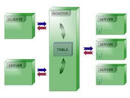
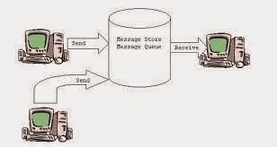

Introducción
El método Store and Forward consiste en almacenar temporalmente los datos antes de reenviarlos. Según Tanenbaum, este método es característico de redes de conmutación de paquetes.
Desarrollo
Cada nodo recibe el paquete completo, lo verifica y luego lo reenvía. Forouzan destaca que este proceso mejora la detección de errores, aunque introduce mayor retardo.


Conclusión
En conclusión, Store and Forward prioriza la confiabilidad sobre la velocidad, siendo adecuado para redes de datos.